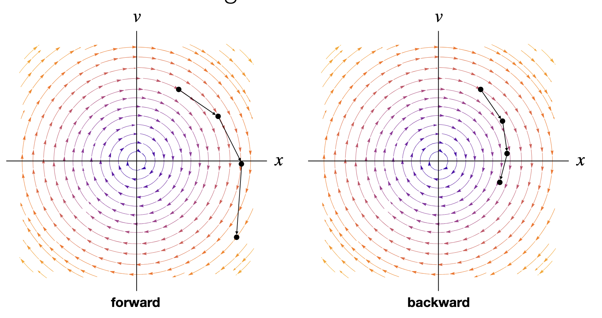
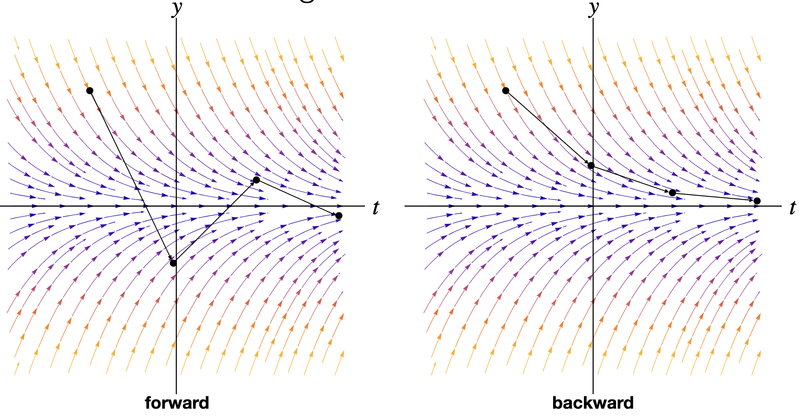
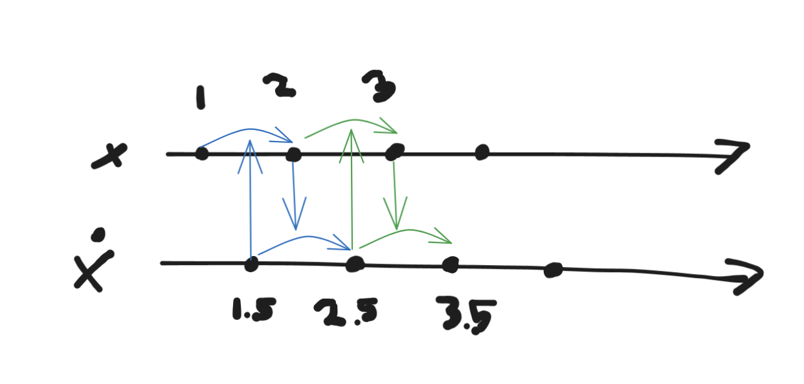
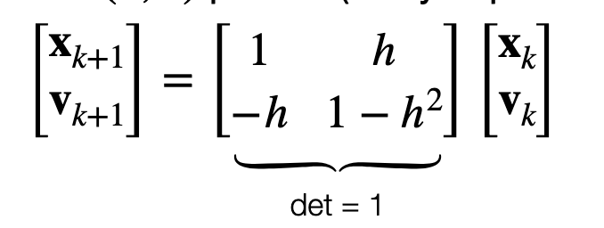

These notes are a colmulation of my attempt at capturing my reading on physical simulation. As my foul mind cannot always find the will to write these notes, they are not exhaustive.
1 Deformable Models in Graphics
2 Refresher on Differential Equations
Ode. Function relating the variable and its derivatives:
\[F(t, y, y', y'', \dots) = 0.\] Most cases we can’t get closed-form solution for \(y\), instead we want an algorithm that gives us values of \(y\) at many \(t_k\) to approximate \(y\). We call such solvers numerical integrators.
If we have a vectored valued function \(\bf y \in R^N\), then the solution to the initial value problem is just a path through\(\mathrm{R}^N\). Most often we try to work with the form of ODE solving for highest derivative:
\[y^{(k)} = F(t,y, y', \dots, y^{(k-1)}).\]
Reduction to 1st order. Given an explicit higher order ODE we can reduce it to first order (only 1st and 0th derivatives of \(y\)). We define a new family of unknown functions \(y_1 = y, y_2=y', ..., y_{k-1} = y^(k-2), F(x, y_{1},
y_{2},\dots, y_{k-1}) = y^{k})\) and rewrite our ODE as a system of simpler ODEs:
\[[y_{1}, y_{2}, \dots, y_{k-1}, f(t, y, y_{1}, \dots, y_{k-1})] = [y', y_{1}', \dots, y_{k-2}', y'_{k-1}]\] which is a single first order ODE in \(kN\) variables.
Autonomous vs non-autonomous. Sometimes we see \(t\) as an explicit parameter, and sometimes we do not. A differential equation is autonomous if it does not depend on the variable x, or in our example \(t\):
\[y'(t) = f(y(t)) \text{ is autonomous}\]\[y'(t) = f(t, y(t)) \text{ is NOT autonomous}\]
We can switch from non-autonomous to autonomous with a conversion by relabeling variables.
Vector field picture.\(y(t)\) is a path of a point through the state space (this is \(y\) after reduction). \(f\) is a vector field in that state space, and tells particles where to go. So the process is an advection through the flow field.
2.1 Numerical Solving: Numerical Integrators
We can only evaluate \(\bf f\) at different \(t\). Since we want \(y\) on some range of \(t\) we evaluate \(y(t_k)\) at a series of time steps.
Setup. We usually know \(y(0)\) and we want \(y\) until some \(t>0\). Start with constant step size \(h\), then we get a series of time-steps\(t_0, t_0+h, \dots, t_{0} k*h.\) for \(k+1\) time steps. Number of steps to get to \(T\) is \(T/h\).
We usually only know the \(y(t_k)\) approximately so want to make our guess \(y_k\) as close as possible: \(y(t_k) \approx
y_k\).
2.1.1 Euler’s integrators
We derive from Taylor expansion, so we can analyze local approximation. e.g. expand \(y\) around \(t_k\): \(y(t) = y(t_k) +
y'(t_k)(t-t_k) + O(|t-t_k|^2)\). By assuming we have \(t_k\), then we can get at \(k+1\) with \[y(t_{k+1}) = y(t_{k}) + h\cdot f(y(t_k)) + O(h^2),
\] since \(f(y(t)) = y'(t)\). This is first order accurate, explicit integration. Explicit because its already solved for \(k\). This gives \(y_{k+1} = y_{k} + hf(y_k)\).
2.1.2 Backward Euler
Alternatively we can expand around \(t=t_{k+1}\), how do we get \(t_k\)?
so we get \(y_{t+1} = y_t + h f(y_{t+1})\). This is implicit first order accurate.
Error shrink. If things are working, we can get any accuracy by taking small \(h\): \[\\lim_{ h \to 0 } [y_{k} - y(t_{k})] = 0 \]Error growth. Since we are time-stepping, the error with accumulate. Worst case each error points in the same direction at each step we multiply the error by \(h\). If the error in one step is \(O(h^p)\) then error after \(N = T/h\) steps is \(O(h^{p-1})\).

Euler Integration

Vector filed view
Towards Higher Order. Midpoint method uses 2 evaluations of \(f\). First evaluates at midpoint time using linear approximation, then approximates from there w/ secon order.
Midpoint method in 2nd order systems.\(x''\) but no \(x'\). Then it depends only on \(x\) not \(x'\).
Then \(x\) is updated based on midpoint velocity and \(x'\) is updated based on \(f(x)\), so \(f\) depending only on \(x\).
Can use staggered grid. Called leap-frog integrator. ==(only works when force doesn’t depend on velocity)==

Staggered grid
Symplectic Euler / Semi-implict Euler. https://adamsturge.github.io/Engine-Blog/mydoc_symplectic_euler.html https://en.wikipedia.org/wiki/Semi-implicit_Euler_method - leapfrog only works for \(f(x) = x''\). - can’t evaluate \(f(x,v)\) without knowing \(x,v\) at the same timestep, can’t use staggered grid. - Solution: - keep the timestep equations, remove staggered grid. - or use the position update from Forward Euler and the velocity update from Backward Euler - nice property: each timestep preserves area in the (x,v) picture (really in position–momentum space)

- simplectyc integrator holds for Hamiltonian systems (roughly energy conserving system)
if \(\partial_t x = f(t,v)\) and \(\partial_t v = g(t,x)\) and hamiltonian is \(H= T(t,v) + V(t,x)\).
Difference with forward Euler is we use \(v_{n+1}\) to compute new \(x\). It is a first order integrator.
\[x_{n+1} = x_n + f(t_n,v_{n+1}) \Delta t\]
\[v_{n+1} = v_n + g(t_n,x_n) \Delta t\]
3 Mass-spring models
Binary Spring. Each spring is defined by the \(i,j\) particles that it connects, the stiffness \(k_s\) and rest length \(l_o\).
By Hook’s law, force is proportional to displacement from rest state:
\[f = k_{s} (l-l_{0}).\]
Force is along the direction of the spring: - \(f_i = k_s(||x_{ij}|| -l_0)\hat x_{i,j}\) where \(x_{i,j} = x_j-x_i\) (pulls \(i\) towards \(j\)) - \(f_j = k_s(||x_ji|| - l_0)\hat x_{ji} = -f_{i}\)
Adding damping. Good integrators preserve “energy” so this osciallation continue. Instead we want to damp them.
Just using drag force\(f_d = -k_d v\) slow down all motion, but we only want to oppose the spring’s movement.
Solution: spring damping force opposes changes in spring length only!
only oppose relative motion,
only oppose motion in the direction of the spring
\(f_i = k_d(v_{ij}\cdot \hat x_{ij})\hat x_{ij}\) where \(v_{ij} = v_j - v_i\). This pulls \(i\) towards \(j\) only when elongating the spring.
Note:\((\hat x \hat x^\top) v\) projects \(v\) in direction of \(\hat x\).
Oscillations of undamped springs. - a 1D damped spring obeys \(m x'' + k_d x' + k_s x = 0\) - and if \(k_d\) is negligible, then \(x(t ) = C_1 cos(\omega t + C_2)\) where \(\omega^2 = k_s /m\).
3D is a cloth. We can create a simple cloth model using a web of particles interconnected using springs. These springs can be connected in such a way to oppose bending, shearing, stretching, etc. If we want a stable simulation, we can use a tetrahedral mesh. That said, there are far better models for simulating cloth based on either potential energy minimization—where we define a set of potential energies for bending, stretching, etc. and minimize that energy—or particle based methods where we derive forces from energies of local particle interactions.
Problem with spring-mass systems for deformables. Spring-mass systems are very simple and fun, but limited in terms of achieving certain material properties / measurements, bending springs are not good at resisting slight bending and its hard to express preservation of volume or area.
But the nice thing about springs is that its a conservative force, taht is it takes same amount of work \(W\) no matter the path it takes. As such it is a derivative of potential energy!
Deriving force from spring energy. Spring energy is:
\[E_{i,j}(x) = 1/2 k_{s} (||x_{i} - x_{j}||-l_{0})^2 \] for one spring.
In spring case we have \(x_{ij} = x_{j } - x_{i}\): \[\nabla_{x_{i}}x_{{ij}} = - 1\]
Derivative is a linear transformation. So instead of saying \(\partial f / \partial x\) we can write \(\delta f = A
\delta x\).
A better bending force: Hinge energy. Want to minimize angles between 3 points in a rod. So we want an energy that depends on the angle between \(x_{ij}, x_{jk}\).
3.1 Text Example
This is a simple text example. Quarto allows you to write documents in Markdown, which is a lightweight and easy-to-use syntax for formatting text[4].
3.2 Math Example
You can include math in your Quarto documents using LaTeX syntax. For example, here is an inline equation: \(e^{i\pi} + 1 = 0\). You can also create a block equation like this:
Quarto supports executable Python code blocks within markdown. This allows you to create fully reproducible documents and reports[1]. Here is an example of a Python code block that generates a plot: